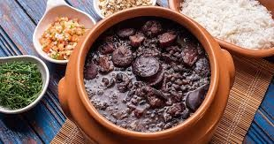

Gastronomia Brasileira por Região

Bahia - Acarajé
O acarajé é um dos pratos mais famosos da Bahia. Feito com feijão-fradinho e frito no azeite de dendê, é recheado com vatapá e camarão.

Minas Gerais - Pão de Queijo
O pão de queijo é um clássico mineiro, conhecido por sua textura macia e sabor marcante de queijo. Muito consumido no café da manhã.

Rio de Janeiro - Feijoada
A feijoada é um prato típico carioca muito popular no Brasil, feita com feijão preto e diversas carnes.